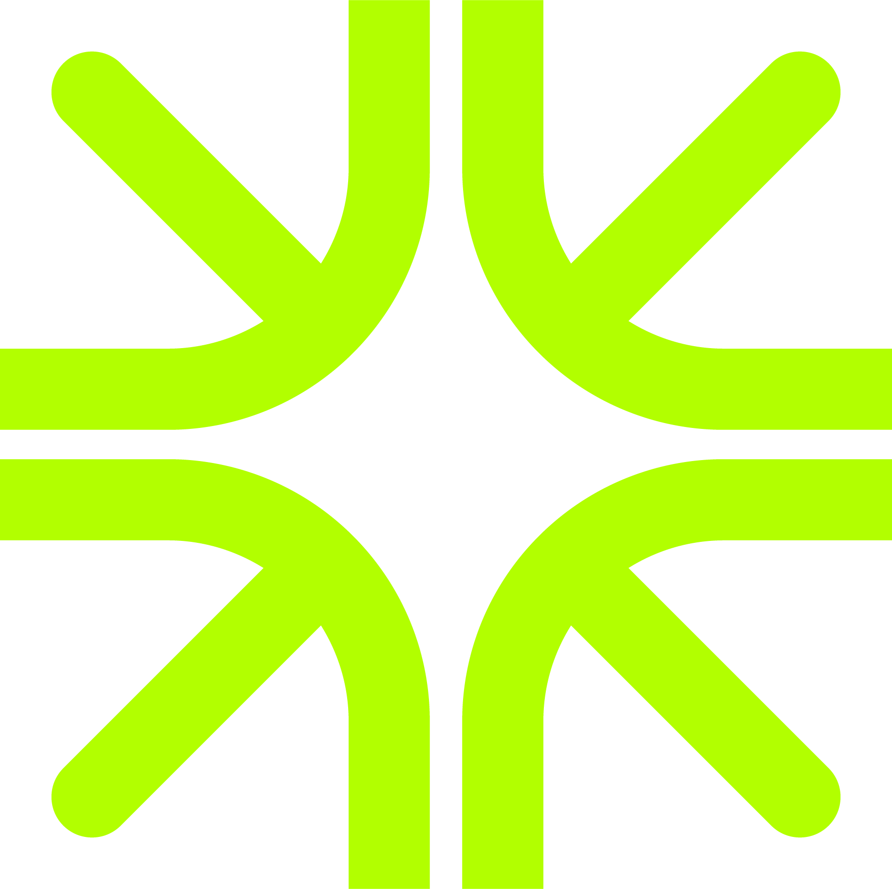

A statewide pipeline of skilled AgTech talent.
Coordinated training, exposure, and credentialing across nine regions — for students, farmworkers, and career changers.
- AWDP
- Farm Robotics Challenge & Academy
- DUCC drone certification
- FARMS Field Days

We are the California AgTech Alliance — a statewide platform connecting agricultural innovation, workforce, and entrepreneurship across nine California regions. Our mission is to align programs, investment, and infrastructure so partners can do more, together.
Workforce supplies talent. Entrepreneurship supplies solutions. Network aligns them across regions and over time.
Workforce supplies talent. Entrepreneurship supplies solutions. Network aligns them across regions and over time.
Coordinated training, exposure, and credentialing across nine regions — for students, farmworkers, and career changers.
Startup-facing programs and tools that shorten the distance between innovation and adoption.
Governance, statewide convenings, the digital hub, the investor network, and the unified branding that aligns it all.
Applications are open through April 15. Teams of students design, build, and field-test agricultural robotics across all nine California regions — culminating in a statewide showcase day in June.
The Alliance speaks directly to the people building California's agricultural future — and credits the partners delivering the work on the ground.
Primary audiences
The Alliance connects you to real farms, real feedback, and the partners who can help you scale solutions that actually get adopted.
Get into the network 02 Farmers & ag operationsYour operations run on skilled workers and proven technology. The Alliance connects you to a statewide pipeline of both — ready for adoption at scale.
Browse validated tech 03 Workers, learners, & farmworkersThe Alliance connects you to the training, credentials, and employers that turn your experience into advancement — without leaving the industry you know.
Find a programSecondary audiences
The Alliance aligns workforce, entrepreneurship, and technology programs so innovation reaches the field.
Engage the Alliance 05 Investors & economic developmentCalifornia's AgTech ecosystem is coordinated and grounded in real agricultural needs. The Alliance is the entry point.
Connect with the AllianceFrom the Salinas Valley to the Imperial Valley, the Alliance unites California's agricultural regions through shared platforms, targeted investment, and cross-regional collaboration.
Milestones, fieldwork, and program updates from partners across the nine regions.

The Drones Uplift California Communities program crosses a milestone — 100 operators credentialed across five regions in under two years.
Read the story
The latest VINE Connect cohort closed pilots with operations in four regions — bringing field-validated harvest tools to commercial scale.
Read the story
FARMS — Field Day Experiences in Ag Technology — completes expansion to all nine California regions, anchoring 24 events between March and October.
Read the storyBrand assets, partner-facing decks, and the organized kit reference. Use them as-is or adapt for your region.
Voice, color, type, logos, glyphs, components, and the source layouts the system was reverse-engineered from.
Open the brand guide 02 Partner deckSeven-slide partner briefing — title, agenda, three pillars, quote, climate moment, scope, and CTA. Use as-is or remix.
Open the deck 03 ReferenceFolder map for logos, fonts, graphics, imagery, shared code, and finished example collateral.
Open the README 04 Fact sheetA printable single-page brief — what the Alliance is, who's behind it, and how to engage. PDF, 8.5 × 11 in.
Download (PDF)Visibility, shared infrastructure, and cross-regional alignment so your work reaches further — no duplication, no land-grab.

June 2026 · Davis, CA